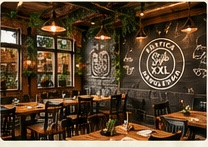
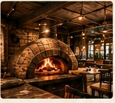
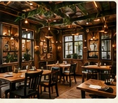

“Maravillosas pizzas! Masa perfecta , los ingredientes de buena calidad!! Súper recomendable 🍕”
PIZZERIA
RÚSTICA
NAPOLETANA STYLE XXL
Tradición, sabor y autenticidad
en cada bocado.
Nuestras
PIZZAS
La masa contiene gluten y nuestras pizzas con queso contienen leche, incluso si el queso es sin lactosa. Las pizzas con atún contienen pescado. Consulta los alérgenos.
VER TODAS LAS PIZZAS
Nuestra masa,
NUESTRA PASIÓN
Elaboramos nuestra masa con harina de alta calidad, fermentación lenta y un proceso artesanal que respeta la tradición napolitana.
Harina
seleccionada
seleccionada
Fermentación
larga
larga
Ingredientes
naturales
naturales



CONOCE NUESTRO LOCAL
Un lugar para disfrutar de una pizza de estilo napolitano, un buen momento y el sabor de siempre.
Imágenes de ambiente ilustrativas. VER MÁS FOTOS
LO QUE DICEN DE NOSOTROS
Reseñas de Google
Palabras de quienes ya han probado nuestras pizzas.
Selección de opiniones públicas · Consulta Google para ver los comentarios completos y actualizados.“Pizzería espectacular que te recuerda a las famosas pizzas napolitanas. Los trabajadores son muy profesionales y las dos chicas que te atienden son maravillosas, muy amables.…”
“Pizzas deliciosas, buen tamaño y el trato muy bueno, tiempo de espera razonable, totalmente recomendable, tienen postres muy ricos”
1 de 9
HORARIO
Lunes
Cerrado
Martes
Cerrado
Miércoles
20:30 — cierre
Jueves
20:30 — cierre
Viernes
20:30 — cierre
Sábado
20:30 — cierre
Domingo
20:30 — cierre